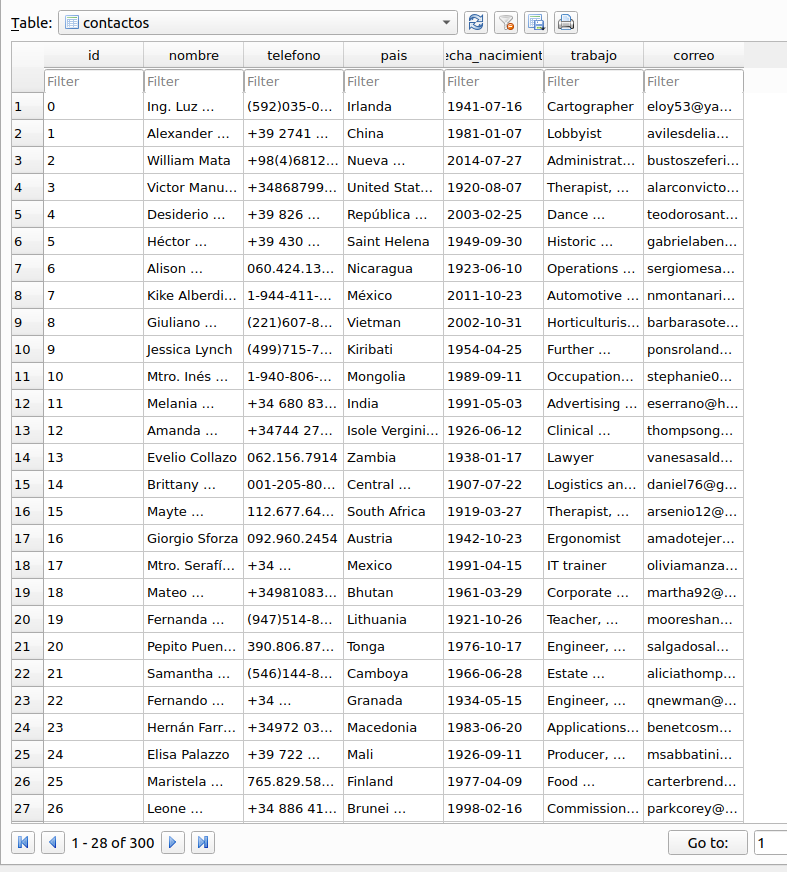

Generar datos falsos con Faker
Posted on dom 11 julio 2021 in Tutorial Data Engineer • 3 min read
Este artículo toma partes de lo explicado en un artículo del año 2012 Abstracción del motor de Base de Datos con el ORM Sqlalchemy y python, donde se explica el uso de sqlalchemy y sqlite3 con Python.
La documentación completa de faker la pueden encontrar en el enlace. Esta librería permite generar datos falsos como lo son nombre, telefono, trabajo, país entre otros.
Este articulo toma la idea de un artículo de Towards Data Science, Generating Random Data into a Database Using Python.
Instalación de paquetes necesarios e importar librerías.
Se tiene que instalar Faker y sqlalchemy.
pip install Faker sqlalchemy
Explicación del código
- Importar librerías Faker y sqlalchemy
from sqlalchemy import *
from faker import Faker
2. Se crea la base de datos sqlite contactos.db y su tabla con los campos necesarios
La tabla se crea con los campos:
* id: Id del dato insertado tipo entero, clave primaria.
* nombre: Nombre completo, tipo string.
* telefono: Telefono, tipo string.
* pais: País, tipo string.
* fecha_nacimiento: Fecha de nacimiento, tipo string.
* trabajo: Trabajo, tipo string.
* correo: Correo, tipo string.
```python
db = create_engine('sqlite:///contactos.db')
#Se deshabilita el verbose de las ejecuciones.
db.echo = False
# Se define la metadata
metadata = MetaData(db)
# Se crea la tabla contactos con sus campos.
contactos = Table('contactos',metadata,
Column('id',Integer,primary_key=True),
Column('nombre', Unicode(100)),
Column('telefono',String(11)),
Column('pais',String(50)),
Column('fecha_nacimiento',String(20)),
Column('trabajo',String(50)),
Column('correo',String(50)))
# Se crea la tabla en la base de datos.
metadata.create_all()
- Se generan los datos aleatorios y se insertan en la base de datos.
# A continuación se define la instancia de faker con datos localizados para España, Mexico, Italia y Estados Unidos.
fake = Faker(['it_IT', 'en_US', 'es_ES','es_MX'])
# Se crea la instancia para insertar los datos en la tabla contactos.
u = contactos.insert()
# Se generan 300 datos aleatorios falsos.
# Nombre, telefono, id, país, fecha de nacimiento, trabajo y correo.
for i in range(300):
u.execute(nombre=fake.name(),
telefono=fake.phone_number(),
id=i,
pais=fake.country(),
fecha_nacimiento=fake.date_of_birth(),
trabajo=fake.job(),
correo=fake.ascii_free_email())
- Consultar la base de datos.
Luego de terminar de insertar los datos, se puede realizar un select para listarlos:
# Se crea el select para contactos y se ejecuta.
s = contactos.select()
rs = s.execute()
# Se recorre las filas
for fila in rs:
print (fila)
La salida sería algo así:
(0, 'Ing. Luz Cantú', '(592)035-0771', 'Irlanda', '1941-07-16', 'Cartographer', 'eloy53@yahoo.com')
(1, 'Alexander Rogers', '+39 2741 04213055', 'China', '1981-01-07', 'Lobbyist', 'avilesdelia@gmail.com')
(2, 'William Mata', '+98(4)6812081105', 'Nueva Zelandia', '2014-07-27', 'Administrator, charities/voluntary organisations', 'bustoszeferino@yahoo.com')
(3, 'Victor Manuel de Riquelme', '+34868799533', 'United States of America', '1920-08-07', 'Therapist, speech and language', 'alarconvictor@hotmail.com')
(4, 'Desiderio Tudela Hurtado', '+39 826 2913339', 'República Democrática Popular Lao', '2003-02-25', 'Dance movement psychotherapist', 'teodorosantacruz@gmail.com')
(5, 'Héctor Figueroa', '+39 430 26536170', 'Saint Helena', '1949-09-30', 'Historic buildings inspector/conservation officer', 'gabrielabenavides@hotmail.com')
(6, 'Alison Fernandez', '060.424.1361x63279', 'Nicaragua', '1923-06-10', 'Operations geologist', 'sergiomesa@yahoo.com')
(7, 'Kike Alberdi Solé', '1-944-411-9964x56873', 'México', '2011-10-23', 'Automotive engineer', 'nmontanari@hotmail.it')
(8, 'Giuliano Proietti', '(221)607-8605', 'Vietman', '2002-10-31', 'Horticulturist, amenity', 'barbarasotelo@gmail.com')
(9, 'Jessica Lynch', '(499)715-7365x432', 'Kiribati', '1954-04-25', 'Further education lecturer', 'ponsrolando@gmail.com')
(10, 'Mtro. Inés Santillán', '1-940-806-7100x5576', 'Mongolia', '1989-09-11', 'Occupational psychologist', 'stephanie03@gmail.com')
(11, 'Melania Granatelli', '+34 680 838 256', 'India', '1991-05-03', 'Advertising account planner', 'eserrano@hotmail.com')
(12, 'Amanda Ariasso', '+34744 273 170', 'Isole Vergini Britanniche', '1926-06-12', 'Clinical scientist, histocompatibility and immunogenetics', 'thompsongeorge@hotmail.com')
...
(299, 'Verónica Palomo Pavón', '+39 3517 3948391', 'Bahamas', '1949-04-13', 'Product designer', 'felipeolivo@yahoo.com')
Se puede ver también vía sqlitebrowser.

¡Haz tu donativo! Si te gustó el artículo puedes realizar un donativo con Bitcoin (BTC) usando la billetera digital de tu preferencia a la siguiente dirección: 17MtNybhdkA9GV3UNS6BTwPcuhjXoPrSzV
O Escaneando el código QR desde la billetera: